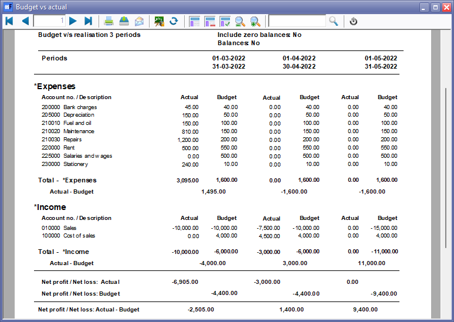

Budget vs actual (Reports menu)
The "Budget v/s realisation 3 periods" report lists the Income and Expense account balances and budget figures for three (3) periods as comparative figures.
Only the transactions in documents and batches which are posted (updated) to the ledger will be included in this report.
Budget figures are entered and edited in the following options:
|
|
If you have activated Cost centres and have entered the budget figures for Cost centres, you may select (tick) the Cost centres to print this report for your Cost centres. |

|
|
This report only includes batch and document transactions which are posted. Unposted batches and documents will be NOT be included in this report. To view a list of unposted batches and documents, which is not updated to the ledger, go to Input → Checking unposted items (Default ribbon). |

Budget vs actual report options
To print a Budget vs actual report:
- On the Reports ribbon, select Reports → Ledger → Budget.

- Select the following options:
- Period - Select up to three (3) periods on the Per period tabs. You may click on the Free selection tab to select a specific date or a range of dates to include balances and budget figures in the report.
- Include zero balances - If this option is not selected (not ticked), it will list only the expense and income accounts which has balances and/or budget figures. Tick this option to include all accounts including those with no actual transactions and/or budget figures).
- Balances - If this option is not selected (not ticked), it will list the expense and income accounts which has balances and/or budget figures. Tick this option to show only the actual transactions totals and/or budget totals of expense and income accounts for the selected period or dates.
- Cost centre 1 - Cost centre 1 will be listed if you have activated Cost centres and created Cost Group 1 (Setup → Groups). You may select any of these Cost centres, to include in the report.
- Cost centre 2 - Cost centre 2 will be listed if you have activated Cost centres and created Cost Group 2 (Setup → Groups). You may select any of these Cost centres, to include in the report.
- Click on the OK button.
Printed : Budget vs actual (realisation - 3 periods) report
View the "Budget v/s realisation 3 periods" report:

The details is as follows:
- Header section - Report name and Periods as selected on the Periods in the Report parameters screen.
- Expenses - A list of the accounts (created as Income and Expense account type and linked to the Expenses Group / Financial category). If the Include zero balances field is selected (ticked), all expense accounts will be listed (including those accounts with no actual transactions and or budget figures. If the Balances field is selected (ticked), only the Total - *Expenses will be displayed.
- Income - A list of the accounts (created as Income and Expense account type and linked to the Income Group / Financial category). If the Include zero balances field is selected (ticked), all income accounts will be listed (including those accounts with no actual transactions and or budget figures). If the Balances field is selected (ticked), only the Total - *Income will be displayed.
- Totals -
- Net Profit / Net Loss: Actual - This is the total of the Expenses minus the Income totals for posted batches and documents. A negative figure indicates a Net Profit and a positive figure displays a Net Loss for the selected periods (dates).
- Net Profit / Net Loss: Budget - This is the total of the Expenses minus the Income totals for the budget figures as entered / edited in Setup → Accounts. A negative figure indicates a Net Profit and a positive figure displays a Net Loss for the selected periods (dates).
- Net Profit / Net Loss: Actual - Budget - This is the total of the Net Profit / Net Loss: Actual minus the Net Profit / Net Loss: Budget totals. A negative figure indicates that the posted batches and documents exceeds (overspend) the budget figures for the selected periods (dates). A positive figure indicates that the posted batches and documents is less than the budget figures (available) for the selected periods (dates).